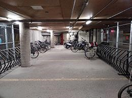

Stationnement

En vélo
Stationnement pour les vélos: La carte ci-contre indique les différentes aires de stationnement à vélo autour du cégep.
Les aires accessibles par la rue Ontario sont celles les plus près de l’entrée principale : une est directement à côté de l’entrée
principale et l’autre est près de l’entrée du bloc sportif. Par contre, si vous arrivez par le nord et que vous ne voulez pas monter la côte
après une grosse journée de conférences, il y a un stationnement derrière le cégep, près d’une entrée secondaire qui mène au 5e étage.
Aussi, une station de réparation se trouve à l’espace Guy Rocher, situé derrière le cégep. Vous y trouverez le nécessaire pour réparer une crevaison.
De plus, une aire de stationnement sécurisée est située dans le stationnement intérieur du collègue, au niveau P4.
Vous la trouverez juste à côté de la sortie du stationnement.
Si vous souhaitez utilisez l’aire de stationnement sécurisée, veuillez contacter le comité organisateur.

En voiture
Le stationnement du collège est situé un peu à l’ouest de l’entrée principale. Il est à noter que le stationnement n’est pas accessible
avant 15h30 du lundi au vendredi, mais qu’il est ouvert en tout temps le soir et la fin de semaine.
Le stationnement intérieur possède une borne de recharge électrique disponible pour le public.
Coût du stationnement : 12$ (par période de 12h)